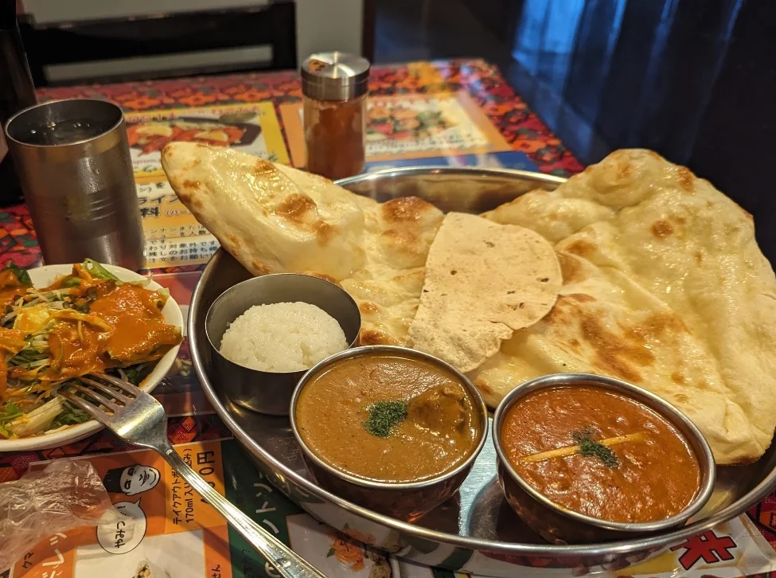
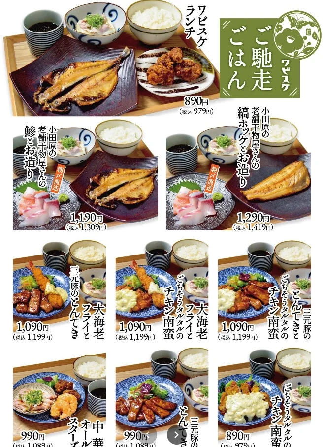
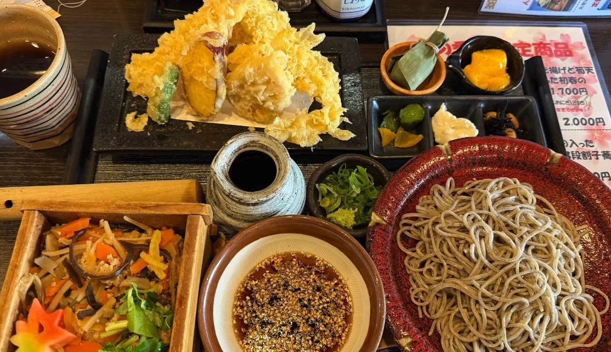
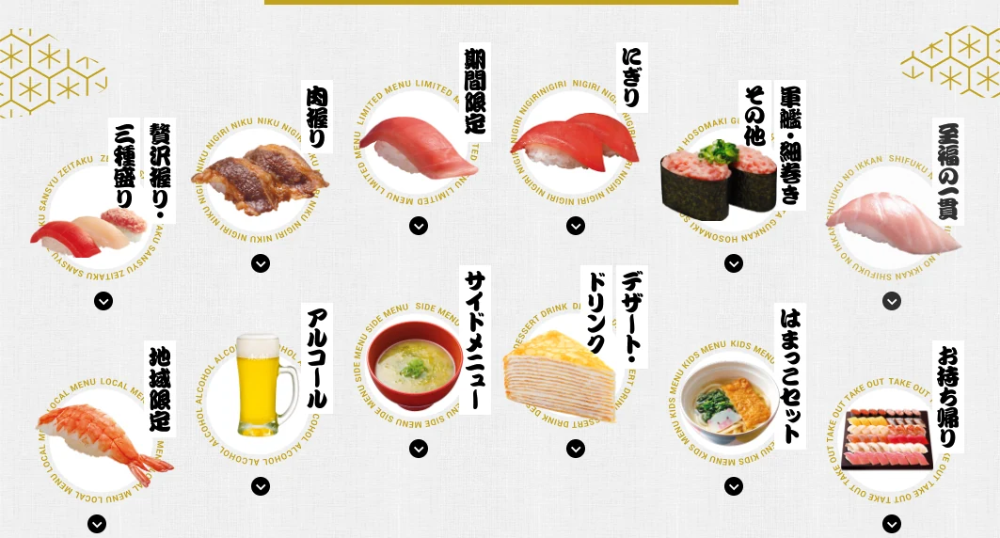
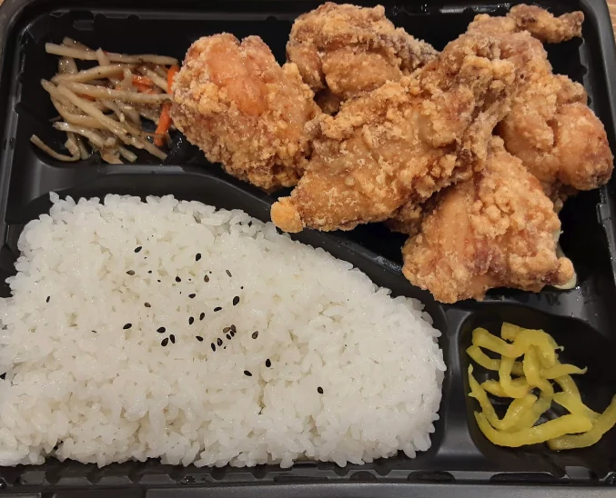
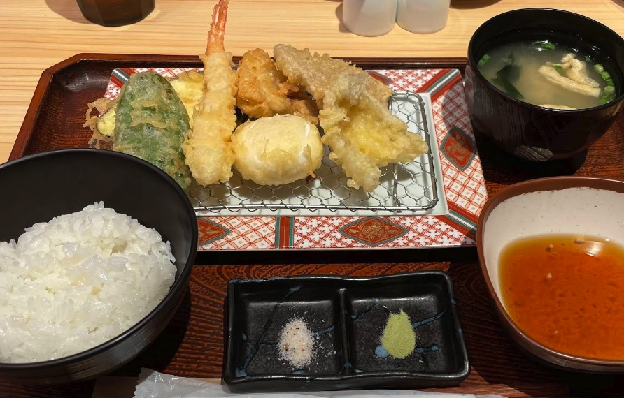

Good food doesn't always have to be famous.
When guests ask where we like to eat, we usually recommend places close to The Showa House.
These are restaurants we actually visit with our family. Some are just a short walk away, while others are worth a quick drive.
Ajisai (Takoyaki & Okonomiyaki)
A casual local restaurant where you can enjoy takoyaki, okonomiyaki, and yakisoba.
If you're not sure what to order, we highly recommend the Okonomi Set. It includes okonomiyaki, takoyaki, and yakisoba, making it a great way to enjoy three of Osaka's most iconic local dishes in one meal.

Ten (Soba Restaurant)
Freshly made soba with crispy tempura.
This small local restaurant is open only for lunch and is one of our favorite places for traditional Japanese soba.
Our recommendation: The Tempura Zaru Soba Set. It comes with chilled soba and freshly fried tempura—a classic combination that we always enjoy.
Nepal Kitchen Kumari (Nepalese Curry Restaurant)
When we are in the mood for curry, this is where we like to go. The flavors are rich, and the staff always make us feel welcome.

Wabisuke Kuzuha Station (Japanese Restaurant)
Wabisuke is a cozy Japanese restaurant inside Kuzuha Station. Many people think of it as an izakaya, but our family also enjoys stopping there for lunch.

Ohno (Soba Restaurant)
Another soba restaurant we enjoy, with plenty of dishes to choose from. When Ten is closed, Ohno is another good place to try.

Hama Sushi (Conveyor Belt Sushi)
Hama Sushi is a popular conveyor-belt sushi chain in Japan. It is a little farther from the house, but we often enjoy its good quality and approachable prices.

Sakura-tei (Japanese-style Western Restaurant)
This is our favorite place for a satisfying hamburger steak lunch. We like it when we feel like enjoying a Japanese-style Western meal.
Karaichi (Japanese Fried Chicken)
Takeout only (no dine-in)
Karaichi is a popular takeout-only fried chicken shop serving authentic Nakatsu-style karaage. It is a great option if you'd like to bring dinner back to The Showa House after a day of sightseeing.
Our recommendation: Mixed Bento (Chicken Thigh & Breast)

The Mixed Bento includes both juicy thigh meat and lean breast meat, letting you enjoy two different styles of Japanese fried chicken in one meal.
View on Google MapsHakata Tempura Yamaya (Tempura Restaurant)
One of our personal favorites. Fresh tempura arrives one piece at a time, and yes—you can enjoy unlimited spicy cod roe.

Please check Google Maps for the latest information before visiting.
Places That Are Part of Our Everyday Life
These may not be famous restaurants you'll find in every guidebook, but they are part of our everyday life.
We hope you'll discover a few of your own favorites during your stay at The Showa House.